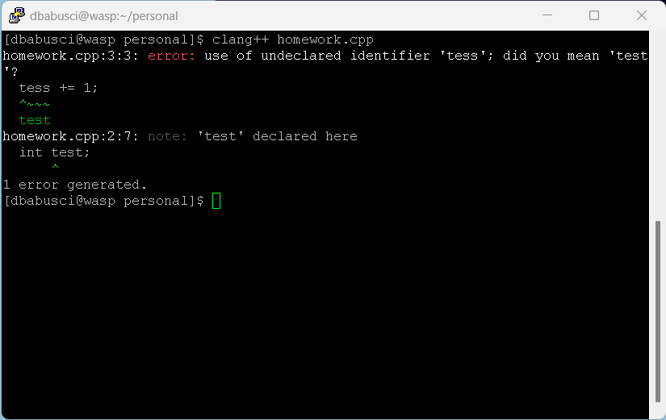

 No one likes to be told they’re wrong, especially your users. Systems should be designed to be as fool-proof as possible, but when unavoidable errors occur, ensure users are provided with simple, intuitive step-by-step instructions to solve the problem as quickly and painlessly as possible. For example, flag the text fields where the users forgot to provide input in an online form.
Previous Rule Next Rule Bad Example